This is the vignette for the anim.plots package, version 0.2.1.9000. A copy is online at github.io. This vignette will work best if you are online. If you’re not online, you can still read it, but you won’t be able to view the animations. It is also best viewed in your browser, and not e.g. from within RStudio. To see it in your browser, you can run:
RShowDoc('anim.plots', package = 'anim.plots')This presentation from GapMinder shows the power of animated graphics. Animation can help tell a story through time, grabbing viewers’ attention. It can help us understand our data better, by engaging our natural sense of how events unfold in time. Many of our explanations use this: stories, narratives and history.
So far, though, animated graphics in R have been difficult. anim.plots aims to remedy this by providing simple commands to create animated plots, similar to standard R graphics. This vignette provides an introduction to anim.plots. By the end, you will be ready to create your own GapMinder-style animation.
anim.plots is built on top of Yihui Xie’s animation package. animation works like traditional cartoon animation. It creates lots of static pictures, then flips through them quickly. Under the hood, anim.plots is doing the same thing, but it bundles it into simple one-liners. If there’s something you can’t do in anim.plots, I encourage you to look at animation. You might also want to look at the gganimate package. Or, if you can use Javascript, plotly has animation capabilities. Bottom line: anim.plots is just a quick hack, there are other powerful solutions out there!
Here’s a very simple animation using the anim.plot command. It shows a dot moving across the screen.
library(anim.plots)
anim.plot(1:10, 1:10, times=1:10, col="green", pch=19)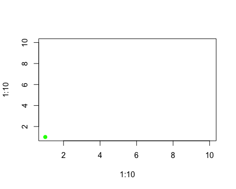
This command shows the basic way anim.plots commands work:
anim.plot) takes the same arguments as the normal graphics command (plot), plus an extra times argument.The times command controls what gets plotted when. Here, it runs from 1 to 10, so you see ten frames of animation.
In each frame, the corresponding values from the first two arguments to anim.plot get used. These also run from 1 to 10. They are passed in as the first two arguments to plot, which control the x and y position. So the green dot moves diagonally up the screen, from (1,1) to (10,10).
If we reverse the order of the times argument, we reverse the order of the plot:
anim.plot(1:10, 1:10, times=10:1, col="green", pch=19)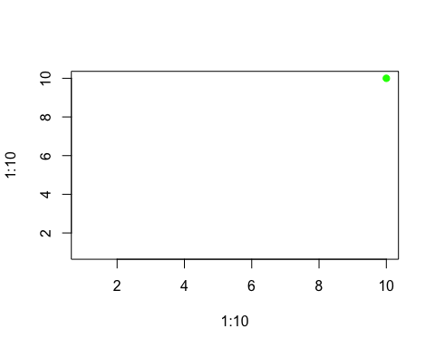
If times has multiple non-unique values, then each set of points corresponding to a single value of times will be plotted together, in a single frame. So, this snippet plots our points two at a time:
times <- rep(1:5, each=2)
times## [1] 1 1 2 2 3 3 4 4 5 5anim.plot(1:10, 1:10, times=times, col="green", pch=19)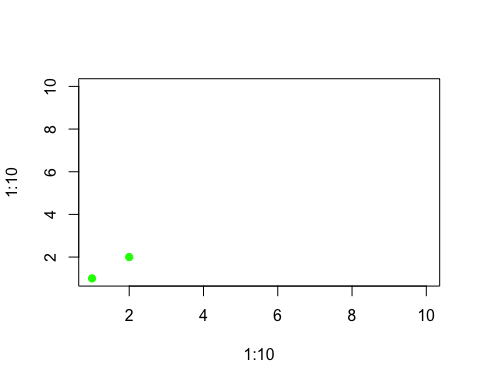
There are two shortcuts you can use. First, if times is a single number, anim.plot will create that many frames, each with an equal number of points. So the following code would have just the same result as the previous example:
anim.plot(1:10, 1:10, times=5, col="green", pch=19)Second, if you don’t specify times at all, it will guess that you want to plot one point at a time. So
anim.plot(1:10, 1:10, col="green", pch=19)will plot 10 frames.
You can animate more than just the location of points. Here are the first twenty plot symbols, in different colours:
cols <- c("green", "blue", "red", "orange", "purple")
y <- rep(2:1, each=10)
anim.plot(1:10, y, times=1:20, col=cols, pch=1:20, cex=3,
ylim=c(0.5,2.5))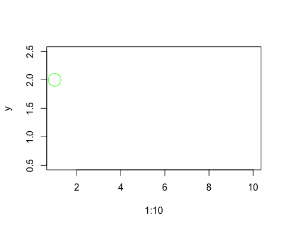
The pch and col arguments control the plot symbol and colour, just as they do in the plot command. pch goes from 1 to 20, so a different plot symbol is shown in each frame. cols has five values, so it is recycled four times. (And cex, which controls the size of the plot symbol, has one value, so it is recycled twenty times! In fact, this was already happening in the earlier plots, with pch=19 and col='green'.)
This example demonstrates rule one of recycling arguments in anim.plots:
“Per-point arguments” means arguments like cex, pch and col which can be different for different points.
This way of working should be familiar. In the plot command, you can plot different points with different colours by specifying a vector argument to col. Here, in the same way, you can plot points with different colours across multiple frames of animation.
You can also recycle x and y values. The example sets x=1:10, and this is used twice to produce two rows of plots.
Not all arguments work on each point. Some arguments work on a whole plot at once. But when you are animating, you can change those arguments too. The next command plots our symbols five at a time, and shows an appropriate title.
titles <- paste("Symbols", c(1,6,11,16), "to", c(5,10,15,20))
anim.plot(rep(1:10,2), rep(2:1, each=10), times=4, pch=1:20, cex=3, main=titles, ylim=c(0,3))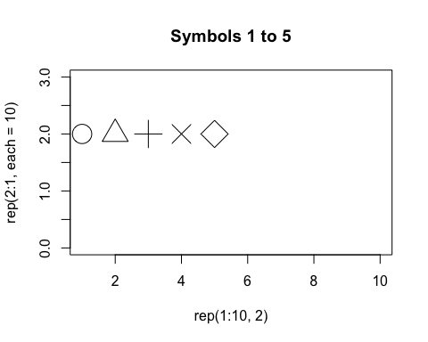
There are four frames, and titles is a vector of length 4, one for each frame. Rule two of anim.plots is:
Now you just need to know one more thing about argument recycling in anim.plots. To illustrate it, let’s suppose we want to animate “zooming in” on a distribution of points. To do that, we will change the xlim and ylim arguments to plot. These give the left/right, and top/bottom edges of the plot window. They are length two vectors.
You might think we would just pass in a vector of xlim values, twice the length of the number of frames, and chop it up with two xlim values for each frame. But in general this wouldn’t work very well - what if we want to pass in more complex arguments, like vectors with arbitrary lengths, or matrices?
Instead, we pass in a 2-by-n matrix of xlim values. This is sliced up into columns, and one column is used for each frame. Here’s the code:
x <- rep(rnorm(4000), 40)
y <- rep(rnorm(4000), 40)
lims <- 4*0.95^(1:40)
ylims <- xlims <- rbind(lims, -lims)
# First five values of xlims:
xlims[,1:5]## [,1] [,2] [,3] [,4] [,5]
## lims 3.8 3.61 3.4295 3.258025 3.095124
## -3.8 -3.61 -3.4295 -3.258025 -3.095124 anim.plot(x, y, times=40, speed=5, xlim=xlims, ylim=ylims,
col=rgb(runif(4000), 0, runif(4000), .3), pch=19)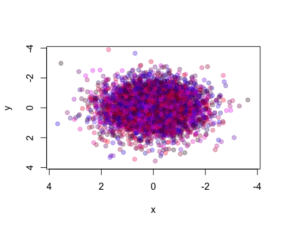
We repeat our x and y values 40 times, so we will plot the same points, but within different bounds. The plot zooms in by 5% each time.
So, rule three for recycling parameters is:
For more complex arguments, you can pass them in as a 3-or-more dimensional array. Later we’ll see an example in anim.persp.
Paradoxically, we don’t always want to plot “one time at a time”. Sometimes we may want to add points incrementally. There is a simple way to do this, using the window argument to anim.plot.
The default value of the window argument is window=t. This plots all the points from time t at time t. By using a different expression involving t, you can change the set of points that gets plotted. For example, window=1:t will plot everything from time 1 to time t. Let’s use this for a statistical demonstration of the effect of increasing sample size.
allx <- rnorm(400)
ally <- allx + rnorm(400)
anim.plot(allx, ally, times=40, window=1:t, col=rgb(0, 0, 0, 0.5), pch=19,
main=paste("Sample size", 1:40*10))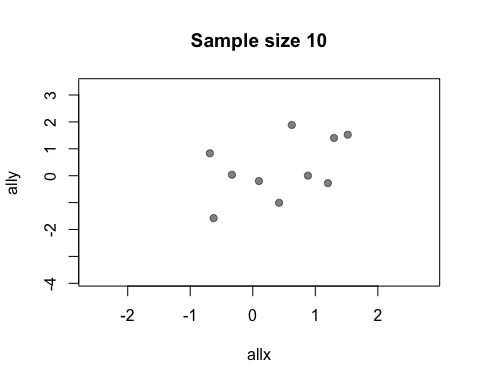
As t grows, the set of points plotted increases and the relationship between x and y becomes clearer.
You may be wondering why window doesn’t also affect the main argument and mess up your plot titles. The short answer is, magic ;-) The long answer is that anim.plots knows the difference between per-plot and per-point arguments: only per-point arguments are affected by window.
You don’t actually need window for this example: you could just use anim.points to add points incrementally to an animation. Our next trick uses window for something cleverer. We animate the number of discoveries made over the years 1860-1959, from the discoveries dataset.
xlim <- rbind(1840:1939,1860:1959)
anim.plot(1860:1959, discoveries, times=100, xlim=xlim, col="red", xlab="Year",
xaxp=rbind(xlim, 10), window=(t-20):t, type="b", lwd=5, speed=4)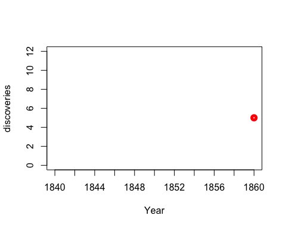
Here, we display discoveries in a 20-year window: (t-20):t.
anim.plot and similar functions return an object of class anim.frames. You can capture this and replay it in whole or part.
Let’s rerun our statistical demonstration. First, we use the show=FALSE argument to create an anim.frames object without displaying it.
allx <- rnorm(200)
ally <- allx + rnorm(200, 0, 2)
stat.demo <- anim.plot(allx, ally, times=20, window=1:t, col=rgb(0, 0, 0, 0.5),
pch=19, main=paste("Sample size", 1:20*10), show=FALSE)Now we display the first five frames, and add a regression line:
replay(stat.demo, frames=1:5)abline(lm(ally[1:50] ~ allx[1:50]), col="red", lwd=2)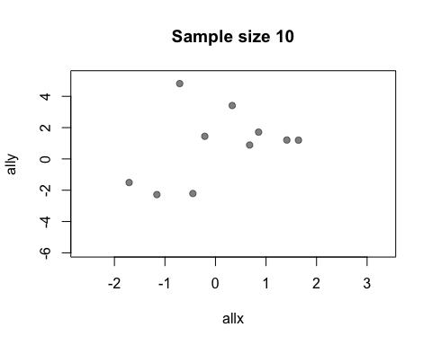
Notice that you can add standard R graphics like abline. This is not surprising: really, everything in the animation is done by normal graphics functions.
Sometimes we need to call a separate function to change the plot. For example, to add a legend to a standard plot, you need to use the legend function. We can’t just do this at the end, because we want it to be shown during the whole animation.
To do this, you can use the after argument to replay. For example, the next animation shows the growth of fifty chicks who are fed one of four different diets. We add a legend showing the diets.
ChickWeight$chn <- as.numeric(as.factor(ChickWeight$Chick))
chw.anim <- anim.plot(ChickWeight$chn, ChickWeight$weight,
times=ChickWeight$Time, col=as.numeric(ChickWeight$Diet),
pch=as.numeric(ChickWeight$Diet), speed=3, show=FALSE)
replay(chw.anim, after=legend("topleft", legend=paste("Diet", 1:4), pch=1:4,
col=1:4))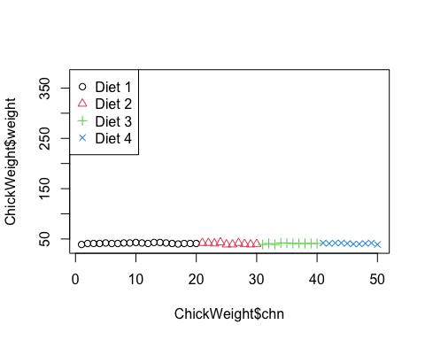
The argument to after will be evaluated after each frame of the animation.
When after is evaluated, the arguments to the preceding function call are available in its environment. This lets you do things like data summaries. Here is our sample size demo again, but now we’ll add a regression line at each frame.
replay(stat.demo, after={
abline(lm(ally~allx), col="red")
abline(lm(y~x), pty=1, lty=2, col="grey2")
legend("topleft", lty=2:1, col=c("grey2", "red"), legend=c("Estimate",
"True"))
})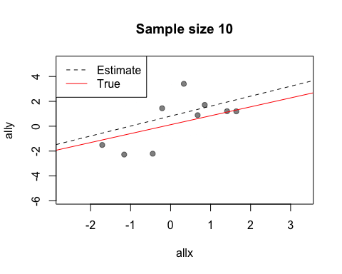
Look at the first two calls to abline. The first call uses allx and ally, data from the global environment. The second call uses x and y. These are the names of the first two arguments to plot - the data that has been plotted. Notice also how we use curly brackets ({}) to run multiple statements after each plot.
There is also a before argument to call a function before the main plot is run. For more complicated plots, you can merge two anim.frames objects: more on this below.
Like many plot functions, anim.plot has a formula interface. The following command would show the plot of chick growth again, and is much easier to type.
anim.plot(weight ~ chn + Time, data=ChickWeight, col=as.numeric(Diet),
pch=as.numeric(Diet), speed=3)The format is y ~ x + times. As you can see, other arguments also get evaluated in the environment provided by data.
As well as the standard plot function, anim.plots provides animated versions of several others. anim.hist is a histogram:
anim.hist(rep(rnorm(5000), 7), times=rep(1:7, each=5000),
breaks=c(5,10,20,50,100,200, 500, 1000))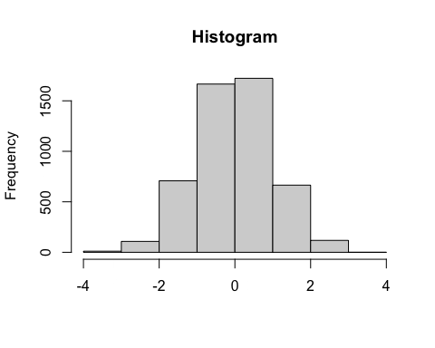
anim.curve plots a mathematical curve. The value t changes over time.
anim.curve(sin(x*t), times=1:30, n=100, speed=12, col="darkgreen", from=-1, to=1)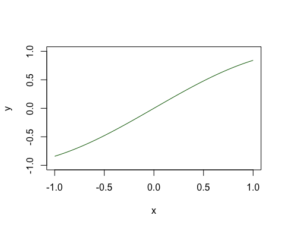
anim.contour does contour plots. Here’s the map of the Maunga Whau volcano in Auckland, emerging from a sphere.
# create a sphere:
tmp <- volcano
tmp[] <- 200 - ((row(tmp) - 43)^2 + (col(tmp) - 30)^2)/20
# an animated contour needs a 3D array:
cplot <- array(NA, dim=c(87,61,20))
cplot[,,1] <- tmp
cplot[,,20] <- volcano
# morph the volcano into a circle:
cplot <- apply(cplot, 1:2, function(x) seq(x[1], x[20], length.out=20))
cplot <- aperm(cplot, c(2,3,1))
dim(cplot) # the third dimension is time## [1] 87 61 20anim.contour(z=cplot, times=1:20, speed=3, levels=80 + 1:12*10, lty=c(1,2,2))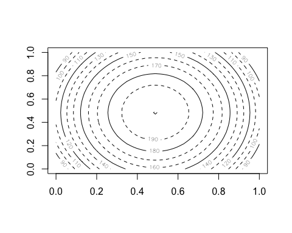
The closely related anim.persp does animated 3D plots.
par(mar=rep(.4,4))
cplot2 <- apply(cplot, 1:2, function(x) seq(94, x[20], length.out=20))
cplot2 <- aperm(cplot2, c(2,3,1))
anim.persp(z=cplot2, times=1:20, phi=15:34, theta=30:49, speed=5, border=NA,
col="yellowgreen", shade=.5, box=FALSE)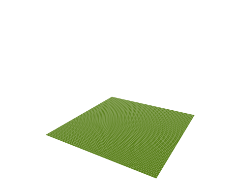
Both of these provide a 3D array as their first argument. This 3D array is sliced up, and each slice is passed to contour or persp to create a separate frame.
anim.barplot is a little tricky. You can pass it a vector, which will be cut up according to times to create a single-D barplot. Or you can pass it a 3D matrix which will be sliced up to create a multiple barplot (either stacked or side-by-side). The example shows 20 rounds of a laboratory public goods game, dividing subjects up by the amount they contributed and showing whether or not their fellow group members punished them.
prop <- prop.table(PGgame, 2:3)
prop[, , 1:2]## , , Period = 1
##
## Contribution
## Picked Non-unique lowest Not lowest/all same Unique lowest
## FALSE 1.0000000 1.0000000 0.5909091
## TRUE 0.0000000 0.0000000 0.4090909
##
## , , Period = 2
##
## Contribution
## Picked Non-unique lowest Not lowest/all same Unique lowest
## FALSE 0.9047619 1.0000000 0.7391304
## TRUE 0.0952381 0.0000000 0.2608696anim.barplot(prop, main=paste("Period", 1:20), legend=TRUE, ylim=c(0, 1.5),
col=c("grey", "red"),
args.legend=list(x="topright", legend=c("Punished", "Not punished"),
bty="n", horiz=TRUE))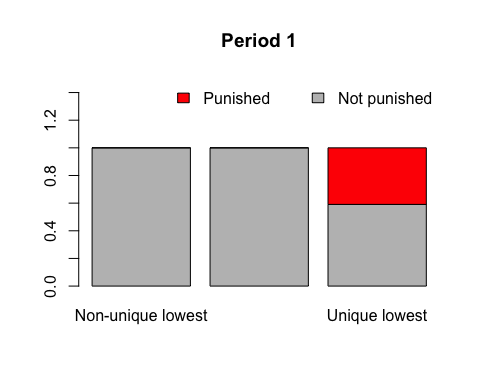
Lastly, most of the usual points-style functions have animated versions. In particular there are anim.points, anim.lines, anim.text and anim.symbols. All these will add to an existing plot, rather than create a new one.
Here, we use anim.lines to recreate an animated version of a famous plot. (You will need the maps library installed to see it.)
Note: as of November 2014, this and the subsequent plot don’t show in knitr. They work if run from the command line, however.
if (require('maps')) {
map('world', xlim=c(22, 40), ylim=c(52,58), fill=TRUE, col=c("wheat", "sienna1"))
if (require('mapdata')) map('rivers', add=TRUE)
title("March of the Grande Armee on Moscow")
points(cities$long, cities$lat, pch=18)
text(cities$long, cities$lat, labels=cities$city, pos=4, cex=.7)
with(troops[troops$group==1,], anim.lines(x=long,
y=lat, window=t:(t+1), speed=2, lwd=survivors/10000,
col=rgb(.3,.16,.16)))
}## Loading required package: mapdata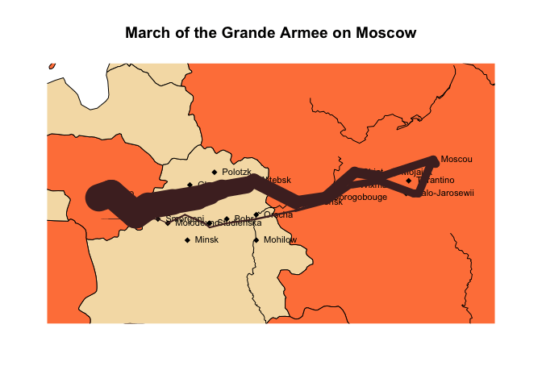
There are also anim.segments and anim.arrows. Like anim.points and friends, these functions add to the plot between frames, rather than redrawing it. The convenience functions anim.arrowplot and anim.segmentplot redraw the plot before they are called.
Below we draw the paths of all 2009 hurricanes, starting them all simultaneously at their first recorded time.
if (require('maps')) {
hr <- subset(hurricanes, lat > 0 & lat < 50 & lon > -95 & lon < -20 &
Shour %% 6 == 0)
hr$dlat <- cos(hr$diruv/360*2*pi) * hr$maguv / 8
hr$dlon <- sin(hr$diruv/360*2*pi) * hr$maguv / 8
hr$name <- sub("\\s+$", "", hr$name)
map('world', xlim=c(-95,-20), ylim=c(0,50), fill=TRUE, col=terrain.colors(10))
title("Hurricanes, 2009")
with(hr[!duplicated(hr$name),], text(lon, lat, labels=paste0(name, "\n", Yr), cex=0.8))
with(hr, anim.arrows(x0=lon, y0=lat, y1=lat+dlat, x1=lon+dlon, times=Shour,
speed=12, col=rgb(0,0,1,0.8), length=.1, lwd=2))
}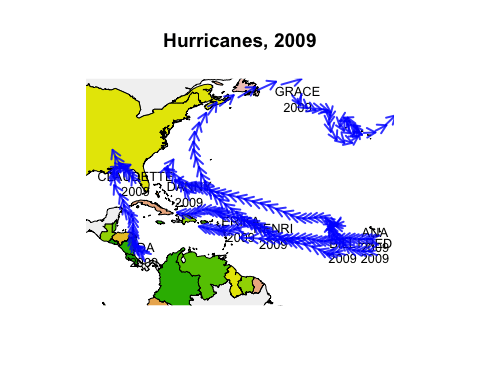
Now we’ve got almost all the tools we need to create our own Gapminder-style animation. The last tool is the merge method for two anim.frames objects. This creates a single animation from two objects. We use it below to add labels to the larger countries.
pl <- palette(adjustcolor(rainbow(23), 1, .6, .6, .6, offset=c(0,0,0,-0.1)))
blobs <- anim.plot(lifex ~ GDP + year, data=gm_data, log="x",
cex=sqrt(pop)*0.0004, pch=19, col=region, xlab="GDP",
ylab="Life expectancy", speed=7, subset=year > 1850, show=FALSE)
cnames <- anim.text(lifex ~ GDP + year, data=gm_data,
labels=country, speed=7, subset=year > 1850 & pop > 50000000,
show=FALSE, cex=0.7, col="darkorange")
replay(merge(blobs, cnames))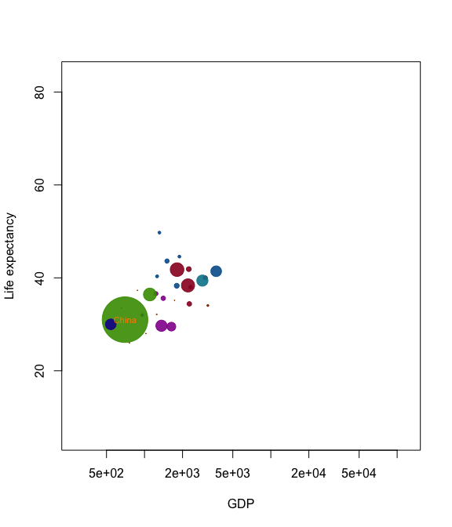
palette(pl)Merging is quite primitive - it simply interleaves graphics calls. Don’t expect it to put different plots on the same window unless one of the calls is to a function like points.
To replay plots faster or slower, use the speed argument. knitr doesn’t display this nicely in this document, but it will work for you.
Similarly, if you have different intervals between your values of times, anim.plots will respect these when they are played. For example
anim.plot(1:5, 1:5, times=c(1,2,8,9,10))will show a long pause between the second and third frames. To turn this feature off, pass the argument use.times=FALSE.
You can process arguments for each individual plot using the window.process argument. This should be a function which takes two arguments - a list of arguments to plot, and a vector of times. It should return the plot arguments, suitably processed. This can be useful for, e.g., drawing animated movement:
anim.plot(1:100, 1:100 + sin(1:100/3)*5, speed=10, window=(t-5):t,
window.process = function(args, times){
args$col <- rgb(0,0,0,0:5/5) # fade shadows
return(args)
})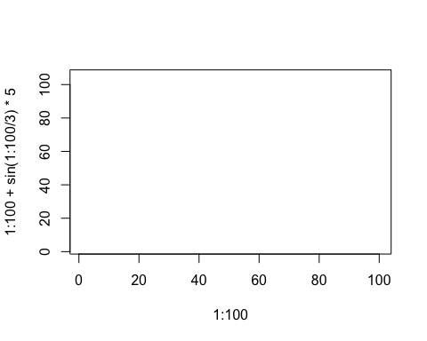
Lastly, if you’re feeling adventurous, you can pass a different function than plot into anim.plot using the fn argument. (Quite a few of the built-in functions work this way.) You may even be able to use ggplot or similar….
The function anim.save() will save your anim.frames objects. It simply calls the underlying functions from the animation package.
These functions do not respect changes in animation speed. For example, the following code would show a rocket boosting off:
tmp <- anim.plot(1, 1:30, times=sqrt(1:30))But when you save it, it will go at constant speed. To get round this, run e.g.:
anim.save(anim.smooth(tmp, fps=10), type="Video", filename="rocket.mp4")The anim.smooth function creates a “smoothed” version of the animation, which plays each frame after a constant interval. This involves creating many more frames, so when you play it in R, it will probably look slower. However, when you save it, it should look right.
The code lives at http://github.com/hughjonesd/anim.plots, and issues can be reported at http://github.com/hughjonesd/anim.plots/issues. Enjoy!